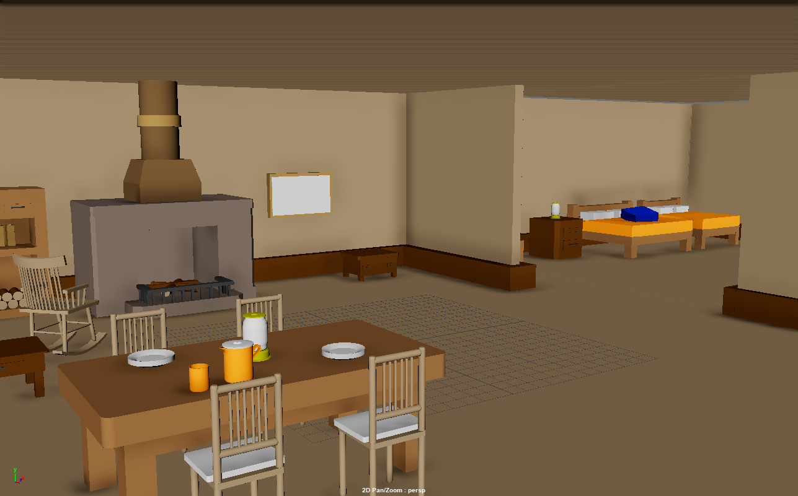
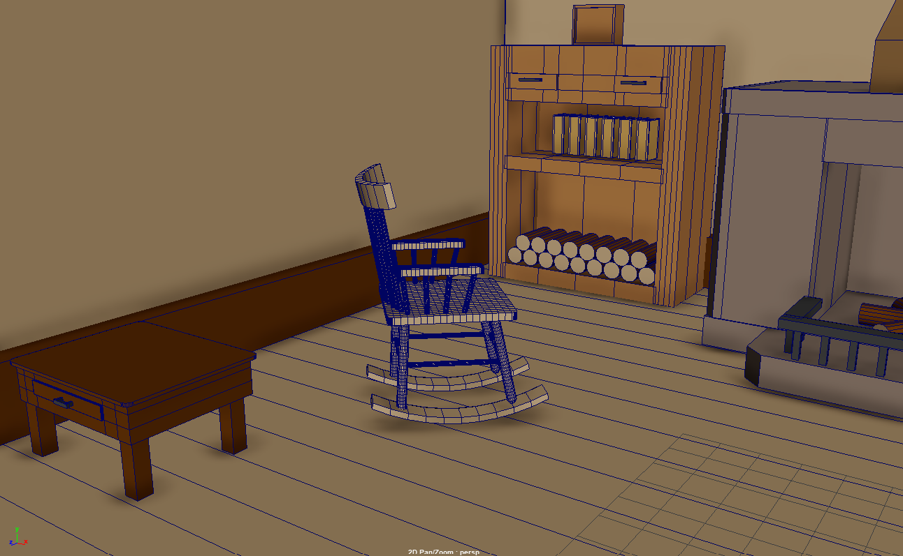

At this point I had more detailed models. There was still a lot of progress to be made, but things resembled the general shape of what they should be. I also assigned basic colors to objects with blinn material to make things feel a bit more complete. The previously refined props were inserted into the scene as well.
 